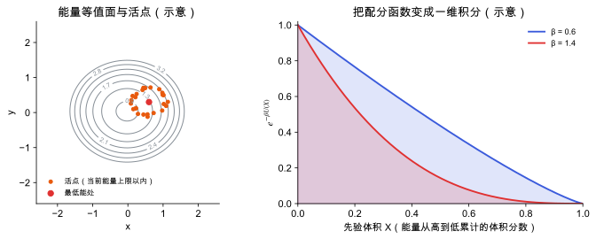

嵌套采样与有限温度自由能
低温下普通采样会卡在局部极小；嵌套采样按能量从高到低扫过整个构型空间，直接估计配分函数，从而得到不需要谐振近似的有限温度自由能与相变。
只是提示，不需要先读完才能往下看。
直觉直观解释
有限温度下的稳定性要比较自由能，核心是配分函数
其中 \beta = 1/k_B T；U(\mathbf x) 是势能；积分遍历整个构型空间。
问题是：低温下 \mathrm{e}^{-\beta U} 几乎只在你还没找到的低能盆地里非零，普通 MD/MC 从任意起点出发很可能卡在一个局部极小里，采样不到真正重要的区域。嵌套采样 (nested sampling) 换了个角度：不按温度采样，而是按能量从高到低“剥壳”。先在整个先验体积里撒一批活点 (live points)，每次去掉能量最高的那个，再在更低能量的区域里补一个新点。活点包围的体积按固定比例收缩，于是从高能一直扫到低能，自然穿过所有盆地 [Skilling 2006]。

| 符号 | 是什么 | 图里对应 |
|---|---|---|
| \mathbf x | 构型坐标（原子位置、晶胞等） | 左图平面坐标 |
| U(\mathbf x) | 势能 | 左图等值线 |
| 活点 | 当前能量上限内的采样点 | 左图橙点 |
| X | 先验体积：能量低于某值的构型占先验的比例 | 右图横轴 |
| \mathrm{e}^{-\beta U(X)} | 给定体积分数处的 Boltzmann 权重 | 右图曲线 |
| Z | 配分函数，曲线下面积 | 右图阴影 |
定义与公式数学与推导
体积换能量
定义“先验体积” (prior volume)
其中 \pi(\mathbf x) 是先验分布（常取均匀分布，或带体积权重的分布）；X 是能量不超过 \lambda 的构型所占的比例，从 1 单调降到 0。把 \lambda 换成它的反函数 U(X)，配分函数就变成一个一维积分：
这就是右图：曲线下面积。X 从 1（高能、体积大）走到 0（低能、体积小），温度越低权重越集中在 X \to 0 的一端。
活点与收缩
用 N 个活点近似这个积分。每一步：
- 找出当前能量最高的活点，记它的能量 U_i；
- 它占据的体积分数 X_i 按统计规律收缩：X_i = t_i X_{i-1}，其中 t_i 服从 \mathrm{Beta}(N,1) 分布，期望收缩因子是 N/(N+1)；
- 在 U < U_i 的区域内重新采一个点，补进活点集合。
于是 Z 的估计是
其中 i 遍历被移除的活点；X_i 是第 i 步的体积分数。自由能 F = -k_B T \ln Z。
等压系综与相图
要比较不同晶胞体积的结构，用等压系综：把体积 V 也当作采样坐标，先验里带 V^N 的权重（N 是粒子数），势能换成 U + pV [Baldock et al. 2016]。这样一次嵌套采样就能画出压力–温度相图，而不是每个 (p,T) 点单独算。
在本研究线里的样子对应与边界
- 多晶型排序：自由能与熵 里讲的热力学积分和自由能微扰给的是相对自由能，需要一条从参考态到目标态的路径；嵌套采样直接给绝对配分函数，不需要指定路径，也不依赖谐振近似。
- 用 MLIP 评估能量：嵌套采样要对成千上万个构型求 U，DFT 太贵。通用机器学习势（MACE 与等变消息传递）在这里的角色就是便宜的势能评估器；代价是 MLIP 的误差直接进入 Z，外推区域的误差会被低温权重放大。
- 与准简谐的分工：准简谐近似与热膨胀 便宜，适合筛查；嵌套采样贵，适合对少数候选做有限温度确认。两者结果不一致时，先查准简谐的低频模式和 MLIP 的频率精度。
- 分子晶体：需要采样分子取向和晶胞体积；活点初始化可以从多个已知多晶型出发，保证每个盆地都被覆盖。
常见坑对应与边界
- 活点太少：Z 的统计误差大约随 1/\sqrt{N} 下降；相变附近需要更多活点，否则 C_V 的峰是噪声。
- 先验选错：先验体积元不是“均匀撒点”那么简单，分子取向和晶胞体积要带正确的 Jacobian 权重。
- 势能面不连续：能量排序有平台或跳变时，收缩过程会出错；先检查 MLIP 在采样范围内的光滑性。
- 把 MLIP 误差当统计误差：嵌套采样的误差棒只反映采样误差，不包含势能模型误差。
- 跨组成比较：不同分子数或不同化学组成的 Z 不能直接比，需要化学势项。
检验自己对应与边界
参考资料
论文Skilling 2006
J. Skilling, Nested sampling for general Bayesian computation, Bayesian Analysis 1, 833-859 (2006)
尚未实际查阅，目前只是拟查阅书目
论文Partay et al. 2010
尚未实际查阅，目前只是拟查阅书目
论文Baldock et al. 2016
尚未实际查阅，目前只是拟查阅书目
论文Ashton et al. 2022
G. Ashton et al., Nested sampling for physical scientists, Nature Reviews Methods Primers 2 (2022)
尚未实际查阅，目前只是拟查阅书目
分类统计力学与采样 · 方法 · 研究线：结构预测与能量景观、机器学习势 · 状态：草稿